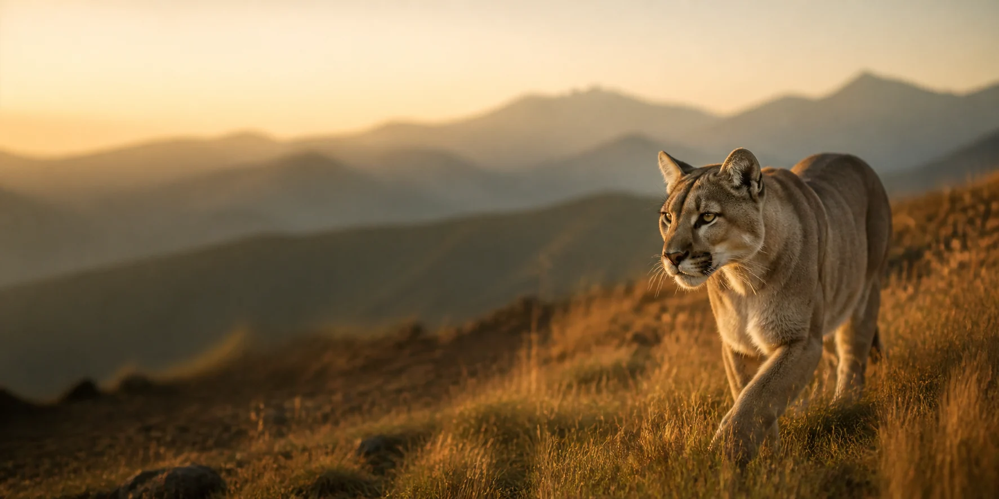
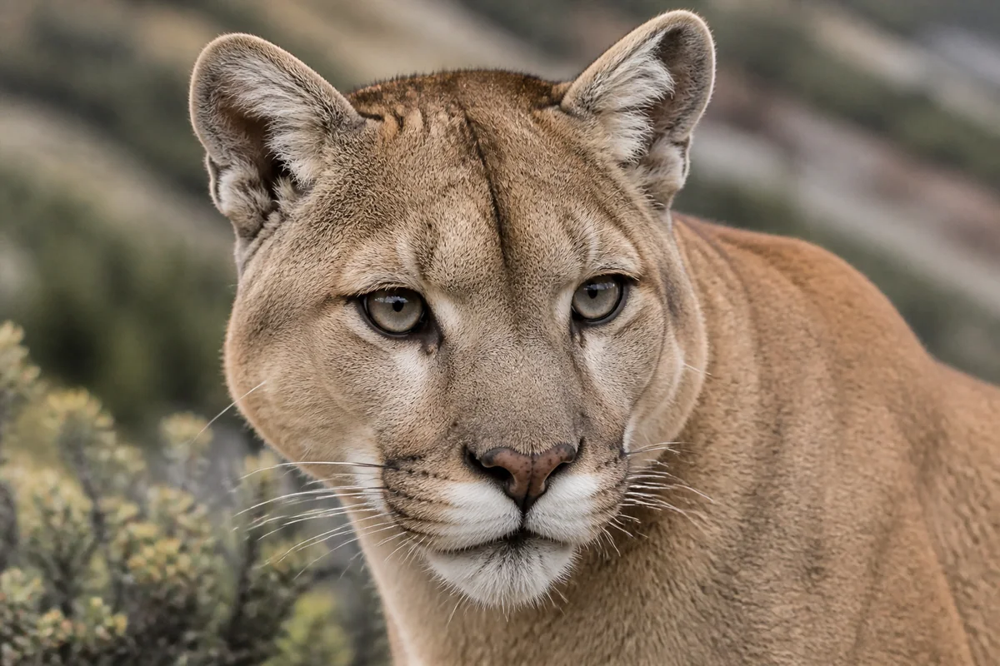
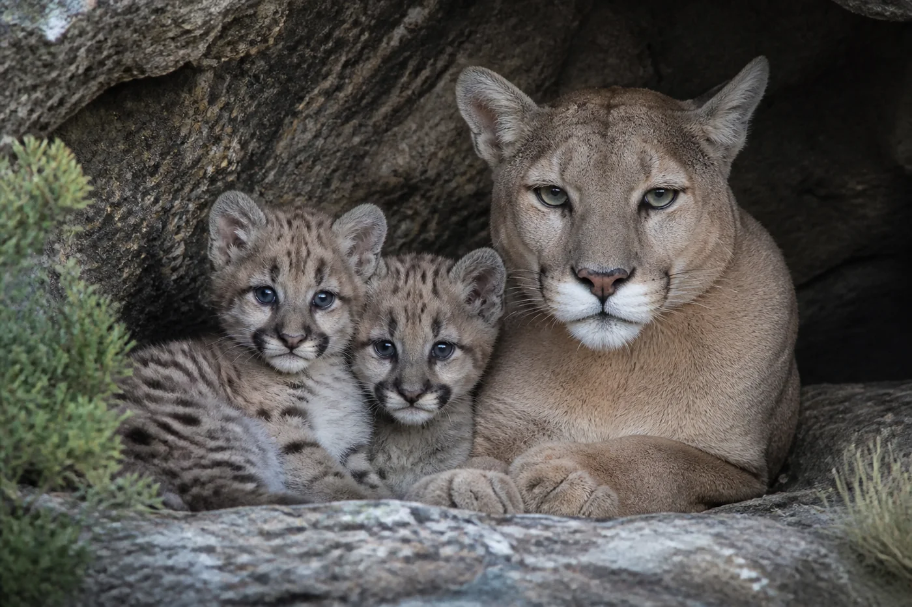

01
A continental range
Its range stretches from southern Alaska to the tip of Chile—larger than that of any other native terrestrial mammal in the Western Hemisphere.

✦Ghost cat of the Americas
One cat. Twenty-three countries. From Canadian forests to the southern edge of Patagonia, the puma thrives across one of the widest ranges of any land mammal.
Meet the puma
✦Meet an icon
Puma, cougar, mountain lion, catamount and panther all refer to the same adaptable species. Its power lies not in brute size, but in stealth, balance and explosive movement.
A long tail steadies every turn. Powerful hind legs drive extraordinary leaps. A tawny coat lets the puma disappear into grassland, forest, desert and rock. Mostly solitary and most active around dawn and dusk, it is built to move unseen.
Puma concolor — “of one color”Field notes
Few large predators are as versatile. The puma’s body, behavior and appetite shift with the landscapes it calls home.
Its range stretches from southern Alaska to the tip of Chile—larger than that of any other native terrestrial mammal in the Western Hemisphere.
Large hind legs can propel a puma roughly 12 metres horizontally or 5.5 metres vertically in a single leap.
Deer are important prey, but pumas adapt their diet to local ecosystems—from rodents and birds to larger hoofed mammals.
Researchers have documented relationships between pumas and nearly 500 other species, revealing their far-reaching ecological influence.

✦The next generation
Puma cubs begin life with blue eyes and spotted coats—camouflage that fades as they grow. Their mother is their sole protector and teacher.
Across the Americas
Pumas inhabit every forest type in their range, as well as high mountains, open steppe, wetlands and dry desert landscapes.
Conservation
Pumas are globally listed as Least Concern, yet many local populations are declining or isolated. Their future depends on connected landscapes and coexistence with people.
Roads and development divide territories, restrict gene flow and increase the risk of vehicle collisions.
Conflict around livestock can lead to retaliatory killing. Practical prevention helps protect both livelihoods and cats.
Where native prey is depleted, pumas face greater pressure and are more likely to approach ranching landscapes.
Range-wide monitoring is essential: a secure global category can hide serious regional declines.
Keep exploring
Range, ecology, threats and conservation work from the global wild cat organization.
PantheraHow researchers are connecting landscapes and supporting coexistence across the Americas.
National GeographicA visual guide to puma biology, hunting, reproduction and survival.
Animal Diversity WebA detailed academic species account from the University of Michigan Museum of Zoology.